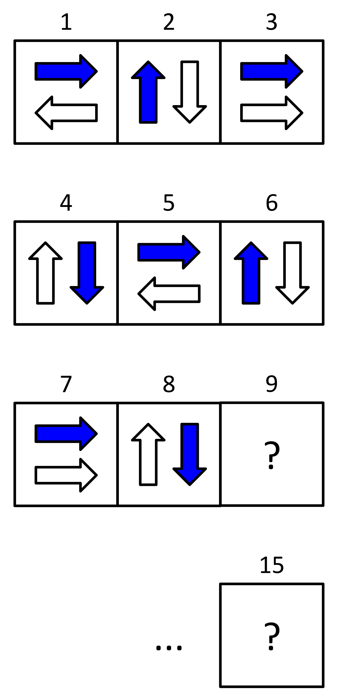

Escher is planning to use tiles to create a border on his kitchen wall. The border will be formed by a row of single tiles. He has selected the first 8 tiles he plans to use. He has numbered them in the order of a pattern he wants to appear, from left to right. The pattern repeats every few tiles, and we can see the repetition in the first 8 tiles in the picture.
What will the 9th tile look like?
What will the 15th tile look like?
